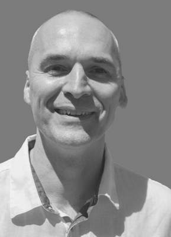

Bojan Bajic
food technology engineer with a specialisation in sanitary chemistry and a Master degree in food technology
- +381 63 546 391
- bojan.bajic@gmail.com
- linkedin.com/in/bojan-bajic-b4854b134
- Novi Sad, Serbia

A specialist of sanitary chemistry with a Master Degree in food technology and 20+ years of industrial experience in ecotoxicology and monitoring environmental pollution indicators, quality control and health safety of water and food. Experience in instrumental methods of analysis, sensory analysis of food and water, application and interpretation of legislation and standards in the field of water and food safety. 5+ years of laboratory co-leadership and lab management experience and lab staff mentoring.
You can make a PDF version of your resume using our free Sketch template here.Work Experiences
Senior Lab Analyst & Physico-Chemical Lab Manager for Water Safety
- Forms laboratory documentation, performs statistical data processing, develops procedures, procedures and instructions in accordance with the requirements of the standard.
- Interprets and implements legislation and standards in the field of water, food and environmental protection.
- Forms test reports with expert opinion and assessment of the compliance of the tested parameters with the applicable legislation.
- Trains and controls the work of staff in the laboratory, participates in regular internal controls.
Senior Lab Analyst
- Application of instrumental methods of analysis as well as routine analytical procedures.
- Development and improvement of the Laboratory for testing and implementation of accreditation standards according to the requirements of SRPS ISO / IEC 17025: 2006.
- Performs Proficiency Testing (PT)/External Quality Assessment (EQA).
Assistant Lab Manager, Center for Hygiene and Human Ecology
- Research in the field of water protection.
- Assessment of the compliance of the examined parameters for food and water with regulations.
- Role of Lab Analyst.
Lab Analyst
- Physical and chemical analysis of food, drinking water, pool water, wastewater, surface water, technological and process water and the content of air pollutants with continuous application of the basic principles of ISO standards in these activities of preventive health care.
Skills
Technical
You can use this section for your side projects. You can provide a project link here as well.
- Application of instrumental methods of analysis (atomic absorption spectrometry, ion chromatography, UV / VIS spectrophotometry, photometry, electrochemistry (pH value, conductometry, turbidimetry), volumetric and gravimetric analysis
- Implementation of physico-chemical laboratory accreditation standards according to the requirements of SRPS ISO / IEC 17025:2006
- Implementation of legislation and standards in the field of water, food and environmental protection
- Assessment of and reporting on the compliance of the tested parameters for food and water with the applicable legislation
- Laboratory equipment installation, maintenance and troubleshooting
- Laboratory documentation and records maintenance
- Expertise in environmental regulations for the disposal of chemical waste, effluent quality and environmental impacts
- Expertise in Proficiency Testing (PT)/External Quality Assessment (EQA)
- Sample preparation prior to its analyses
- Sampling, canning, transport and storage of water and food samples according to standards
Professional Awards and Certificates
- IT Academy’s certificate for Graphics and Web Design, 2019
- Certificate of Attendance - Principles and Applications of Metrology in Chemistry (European Commission), Belgrade, Serbia, 2014
- Certificate of participation in the seminar-training - Sampling - Validation of the process and assessment of measurement uncertainty (Association of Chemical Engineers of Serbia),Belgrade, Srbija, 2014
- Certificate - Testing the ability of the human senses for sensory analysis of food (Faculty of Veterinary Medicine, University of Belgrade), Novi Sad, 2013
- Certificate ECPD Internacional Specialist Seminar - Introduction to Environmental Audit, Sombor, 2005
- Seminar-training at the Institute of Health Care in Maribor, Slovenia trained in Determining Quality Laboratory Analyzes With Accredited Methods In GLP, Maribor, Slovenia, 2007
- EPTISA (European Agency for Reconstruction, Improvement of Laboratory Services) in Serbia. Attended trainings:
- ➢ Validation of methods in analytical chemistry Beograd, 2007
- ➢ Quality control in chemical laboratories , Belgrade, 2007
- ➢ Validation of methods in chemical laboratories and laboratory waste management, Belgrade, 2007
- ➢ Measurement uncertainty and Quality Management software, Belgrade, 2007
- ➢ Computational tools for use in chemical laboratories, Belgrade, 2007
- ➢ Water quality management and the role of the laboratory, Belgrade, 2007
- ➢ Toxicological aspects of drinking water management, Belgrade, 2007
- Certificate of completed basic training for employees in the field of first aid (Health Center Dr Janos Hadzi - occupational medicine), Bačka Topola, 2018
- Certificate of passed advanced training for employees in the field of first aid - module 1: mechanical hazards in the workplace (Health Center Dr Janos Hadzi - occupational medicine), Bačka Topola, 2018